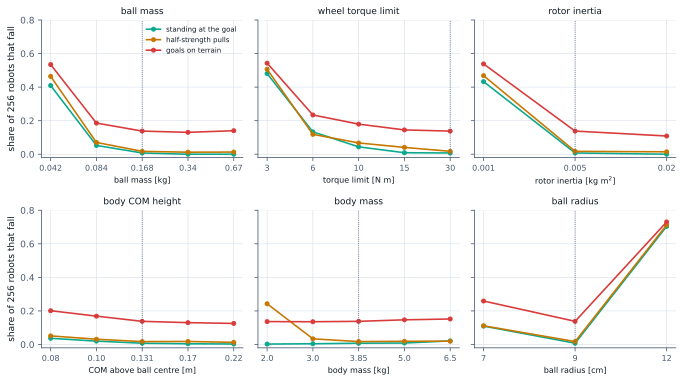
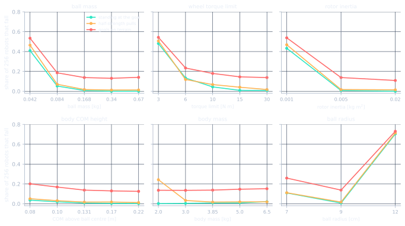

What to build so this controller can balance it
Seven rules for a first build. They come from a simulated sweep that changed one robot property at a time and counted the falls. Guidelines, not measurements of a built robot.
The reference robot
Every variant changes one number of this robot, the "nominal" design the controller was trained around.
- Ball
- 9 cm radius, 0.17 kg
- Body
- 3.85 kg, centre of mass 13 cm above the ball centre (4.0 kg in total)
- Wheels
- three omniwheels touching the ball 51 degrees from its top
- Motors
- direct drive, torque limit 30 N m per wheel
- Rotor inertia
- 0.005 kg m2 (motor plus wheel, seen at the wheel)
- Controller
- LQR plus learned residual, as recommended at the time of the sweep
Nominal falls over 256 worlds: standing at the goal 0.007, with short pushes 0.007, with half-strength pulls 0.017, driving at 0.3 m/s 0.001, goals on terrain 0.138 (S119).
The rules, in order of importance
Most important first. "Falls standing" is the share of 256 simulated robots that fall while holding a goal on flat ground with no disturbance.
-
S119
Ball mass: at least 4 percent of the body mass
8 to 15 percent is better. Falls standing: 41 percent at 1 percent of the body mass, 5 percent at 2 percent, 0.7 percent at the nominal 4.4 percent, 0 percent at 9 and 17 percent.
-
S119
Wheel torque: at least 15 N m peak per wheel
For a 4 kg robot; size the continuous rating for about 3 N m. Falls standing: 0.009 at 15 N m (as good as the nominal 30), 0.044 at 10, 0.13 at 6 and 0.48 at 3. Torque used in a ROS 2 parity rollout: median 0.73 N m, 90th percentile 2.6, 99th 8.1, with short peaks up to the limit.
-
S119
Rotor inertia: not below the nominal 0.005 kg m2
More helped: four times the nominal (0.02) was the best variant of the sweep, terrain-goal falls 0.109 against 0.138. A fifth of it (0.001) fails badly: 0.43 fall standing, and the plain LQR falls just as often (0.49), so it is a limit of that build, not of the training.
-
S119
Centre of mass: build tall, not low
At least the nominal 1.4 ball radii above the ball centre; higher is better up to 2.4, the highest tested. Falls standing: 0.037 at 0.9 radii (8 cm), 0.007 at 1.45 (nominal) and 0.003 at 2.4 (22 cm). Terrain-goal falls: 0.20 down to 0.125.
-
S119, S116
Body mass: 3 to 5 kg for these motors
Not below 3 kg if the robot must resist steady pushing or pulling. Half-strength pulls (1.5 to 6 N) topple 0.24 at 2 kg, 0.034 at 3 kg and 0.017 at the nominal 3.85 kg. Leaning 5 degrees, a body resists about 1.7 N at 2 kg and 3.3 N at 3.85 kg. Above about 5 kg the same motors start to struggle (falls standing 0.021 at 6.5 kg).
-
S119
Wheel contact angle: about 50 degrees from the top of the ball
41 and 61 degrees are both somewhat worse than 51: falls standing 0.015 and 0.025 against 0.007. Differences of one or two percentage points are within the noise of 256 worlds.
-
S119, S94
Ball size: 9 cm radius or larger
A different size needs the learned part retrained. A 7 cm ball is harder: the plain LQR falls 0.28 of the time and the full controller 0.11. A 12 cm ball is physically easy (the plain LQR falls only 0.022), yet the learned controller falls 0.69 because it never trained on another ball size. Larger balls also climb taller steps: ball size against step size.
The whole sweep
Each panel varies one property; the dotted line is the nominal value.


The full table: 22 variants, five tests
The design sweep. Engine: Warp GPU (MuJoCo-Warp 3.17, float32), corrected for the S69 stale-subtree-mass error; wheel-ball free-rolling friction 0.01. Domain randomisation: on (standard ranges). Observation noise: on. Worlds per cell: 256 per case. Seeds: one controller checkpoint (g34_mref_rsad_db_s0, design-conditioned; every spec is a design it never trained on). Protocol: scripts/study/robot_spec.py maps a spec in physical units onto the parametric generator of design_space.py and, with --eval, runs the controller; cases on a fully flat map except the last column: goal hold without disturbance, with the short pushes, with half-strength sustained pulls, driving at 0.3 m/s, and goals on the standard terrain tiles. Files outputs/study/specs/ota_sim.csv and spec_nominal_sim.csv.
| Variation (one property at a time) | Nominal value | Falls: standing at the goal | with short pushes | with half-strength pulls (1.5 to 6 N) | driving at 0.3 m/s | goals on terrain tiles |
|---|---|---|---|---|---|---|
| nominal robot (specs/nominal.yaml) | ball 9 cm, 0.168 kg; body 3.85 kg, COM 0.131 m; 30 N m; rotor 0.005 kg m2; contact 51 deg | 0.007 | 0.007 | 0.017 | 0.001 | 0.138 |
| ball mass 0.042 kg | nominal 0.168 kg | 0.409 | 0.407 | 0.464 | 0.393 | 0.534 |
| ball mass 0.084 kg | nominal 0.168 kg | 0.052 | 0.052 | 0.070 | 0.006 | 0.186 |
| ball mass 0.34 kg | nominal 0.168 kg | 0.000 | 0.000 | 0.012 | 0.000 | 0.130 |
| ball mass 0.67 kg | nominal 0.168 kg | 0.000 | 0.000 | 0.013 | 0.000 | 0.140 |
| body COM height 0.08 m | nominal 0.131 m | 0.037 | 0.031 | 0.051 | 0.010 | 0.201 |
| body COM height 0.10 m | nominal 0.131 m | 0.020 | 0.021 | 0.031 | 0.004 | 0.169 |
| body COM height 0.17 m | nominal 0.131 m | 0.004 | 0.004 | 0.018 | 0.000 | 0.130 |
| body COM height 0.22 m | nominal 0.131 m | 0.003 | 0.001 | 0.013 | 0.000 | 0.125 |
| body mass 2.0 kg | nominal 3.85 kg | 0.002 | 0.003 | 0.243 | 0.000 | 0.136 |
| body mass 3.0 kg | nominal 3.85 kg | 0.004 | 0.007 | 0.034 | 0.000 | 0.136 |
| body mass 5.0 kg | nominal 3.85 kg | 0.009 | 0.013 | 0.019 | 0.001 | 0.147 |
| body mass 6.5 kg | nominal 3.85 kg | 0.021 | 0.018 | 0.020 | 0.001 | 0.152 |
| wheel torque limit 3 N m | nominal 30 N m | 0.481 | 0.482 | 0.507 | 0.001 | 0.543 |
| wheel torque limit 6 N m | nominal 30 N m | 0.133 | 0.134 | 0.118 | 0.000 | 0.234 |
| wheel torque limit 10 N m | nominal 30 N m | 0.044 | 0.052 | 0.067 | 0.000 | 0.179 |
| wheel torque limit 15 N m | nominal 30 N m | 0.009 | 0.011 | 0.041 | 0.000 | 0.145 |
| rotor inertia 0.001 kg m2 | nominal 0.005 kg m2 | 0.433 | 0.444 | 0.468 | 0.372 | 0.538 |
| rotor inertia 0.02 kg m2 | nominal 0.005 kg m2 | 0.000 | 0.000 | 0.014 | 0.000 | 0.109 |
| contact angle 41 deg | nominal 51 deg | 0.015 | 0.015 | 0.034 | 0.004 | 0.136 |
| contact angle 61 deg | nominal 51 deg | 0.025 | 0.028 | 0.031 | 0.006 | 0.166 |
| ball radius 7 cm | nominal 9 cm | 0.109 | 0.109 | 0.111 | 0.025 | 0.259 |
| ball radius 12 cm | nominal 9 cm | 0.704 | 0.699 | 0.713 | 0.763 | 0.730 |
Limits no rule removes
Steady pushes and pulls
Short shoves are absorbed. A steady sideways force is resisted only up to roughly m g sin(5 degrees), about 3.3 N for the nominal body; at 3 to 12 N about a third of robots fall on flat ground. More body mass is the only lever found.
S116, S117Steps
A 1.5 cm step is crossed most of the time; a 3 cm step at 0.5 m/s is beyond the nominal robot. Taller steps need a larger ball or a route around them.
S113 note, S94Hard designs
A very light ball, a very light body and weak motors are what the controller struggles with most. Heavy-body and weak-motor builds sit near their physical limit.
S114, S116Check a candidate design
Write the design as a spec in physical units and run the spec tool. With --eval it also runs the controller on it:
python scripts/study/robot_spec.py build specs/nominal.yaml --evalCopy specs/nominal.yaml, change the numbers and compare the five fall rates with the nominal row of the full table. For a family of variants use the sweep mode with a file like specs/sweep_one_at_a_time.yaml.
- Contact, friction, motor and sensor models are idealised; real numbers will differ.
- One property was varied at a time; combinations were not tested.
- One sweep of 256 robots per case and one controller checkpoint. The sweep ran before the recommendation moved to the current controller and has not been re-run (set
SPEC_RUN=g39_goalcentre_s0to do so). - A design the controller never saw can fail because the controller is unfamiliar with it; an LQR-only check separates the two.
- Torque numbers assume direct drive: with a gearbox divide by the ratio and check the motor's speed range against about 1 m/s of ball speed.